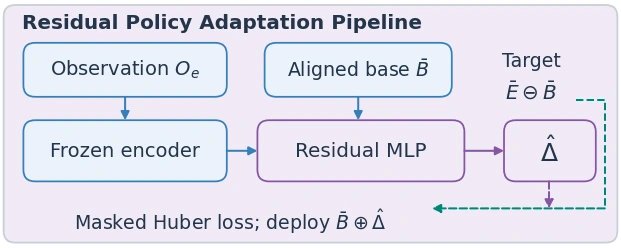
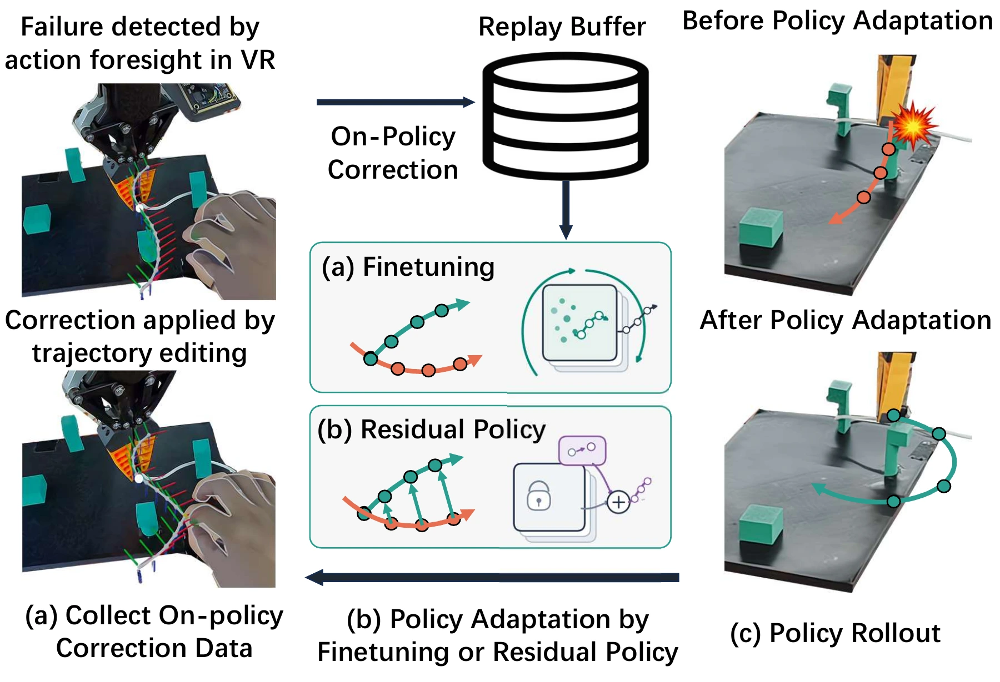
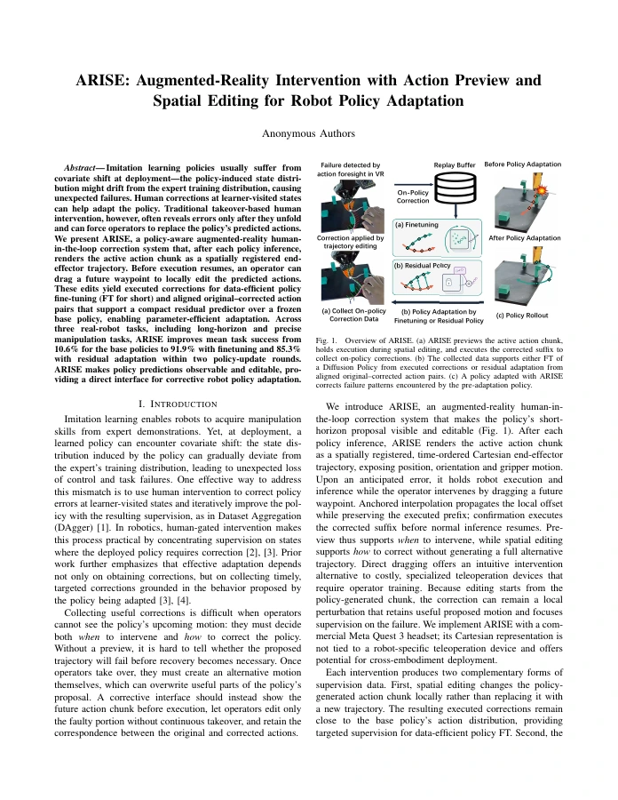

Pass the bottleneck on the first attempt.
ARISE + FT achieves a higher one-pass rate in all three tasks after one adaptation round, measured among successful rollouts.
HUMAN-IN-THE-LOOP ROBOT LEARNING
See what the robot will do. Edit what it should do.
ARISE turns a robot’s next actions into a visible, editable trajectory. A local human edit becomes supervision for a better policy.
Explore the interactionReal robot. Spatially registered action preview. Corrections made directly on the predicted motion.
Learned robot policies can fail when they encounter states beyond their demonstrations. Human corrections help, but taking over often means reacting after an error and replacing motion that was already useful.
ARISE brings the predicted action into the workspace. An augmented-reality interface displays the active action chunk as a 3D end-effector trajectory. The operator can anticipate an error, pause execution, and drag a future waypoint to repair the motion.
Each edit supports two routes to adaptation: fine-tuning from executed corrections, or learning a compact residual from original–corrected action pairs.
Base policies → ARISE + fine-tuning
Mean success with a frozen base policy
Matched correction-episode budgets
Success rates reported in the paper after two policy-update rounds.
One interface connects human insight
to two forms of policy supervision.

A calibrated 3D overlay makes the policy’s planned motion visible as the operator changes viewpoint.
Train the diffusion policy on human corrections. A contiguous action mask excludes subsequent autonomous actions from online supervision.
Learn the geometric difference between original and edited action chunks while keeping the base policy and observation encoder frozen.

From long-horizon sequences to precise placement,
ARISE improves adaptation across all three tasks.
CORRECTION IN PRACTICEPlace a plate, fork, and spoon in order, including opening a drawer to retrieve the fork.
60 evaluation rollouts per method and round. 30 correction episodes per round.
| Method | Successful / total |
|---|
Base-policy results precede adaptation. All methods use the same per-task correction-episode budget. See Figure 6 and Section IV of the paper.
Representative rollouts show how adaptation
repairs failures across the three tasks.
ARISE + FT achieves a higher one-pass rate in all three tasks after one adaptation round, measured among successful rollouts.
On Manage Table, adapted policies show 10.2% lower translational RMS jerk, with improved Log-DJ and SPARC, in 15 successful rollouts per method.
Local edits concentrate supervision at the failure. Paired plans also make it possible to adapt a compact residual instead of updating the full diffusion network.
as many correction windows collected by teleop takeover as by ARISE, under matched episode budgets.
updated parameters for residual adaptation:
1.263M vs. 92.81M for fine-tuning.
Supervision statistics across all three tasks; parameter comparison from the Cable Routing training-cost study (Tables II–III).

Read the full paper ↗ARISE: Augmented-Reality Intervention with Action Preview and Spatial Editing for Robot Policy Adaptation
The paper details the interaction design, correction supervision, three-task evaluation, and ablations of spatial editing and residual learning.